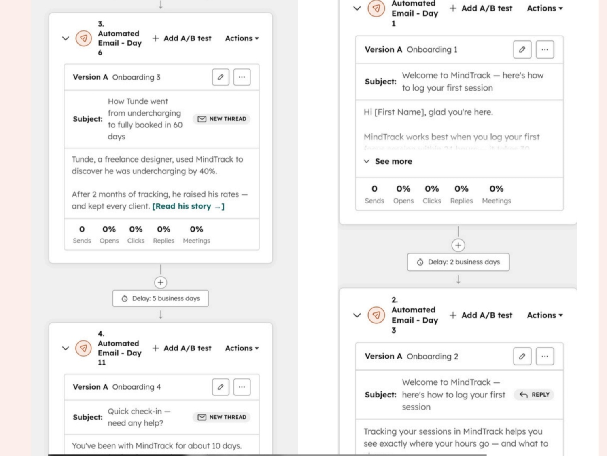

Welcome & first session
Welcomes the user and explains how to log their first session.
Wait 2 business daysCustomer onboarding & activation
A hands-on CRM project using a simulated B2B productivity SaaS business to guide new users towards logging their first work session.
01 · Context
MindTrack is a fictional B2B productivity platform used for this HubSpot practical project. In the scenario, customers log work sessions to better understand how their time is spent.
The onboarding challenge: a user could create an account but still need guidance and motivation to log a first work session. The project focused on making that first action easier to understand and complete.
02 · Goal
The project used a 10-day first-session target. The emails were designed to explain the value of tracking work, encourage the first session and make it easy to ask for help.
Project goal: encourage a new user to log their first work session within the first 10 days.
03 · Implementation
I created four automated emails in HubSpot and arranged them across a timed onboarding sequence. The retained screenshot shows the email actions, schedule, subject lines, content previews and performance counters.
Welcomes the user and explains how to log their first session.
Wait 2 business daysConnects session tracking with understanding where working hours go.
Wait 3 business daysUses Tunde’s illustrative story about discovering he was undercharging and reviewing his rates.
Wait 5 business daysA short check-in asks whether the user needs help getting started.
04 · Implementation evidence
This retained screenshot shows the Day 1, Day 3, Day 6 and Day 11 automated email actions, with their content previews and delays.

05 · Customer Success thinking
06 · Reflection & next iteration
This project demonstrates hands-on HubSpot email and sequence configuration. Because it was simulated and the retained screenshot shows zero sends, I am not presenting activation, engagement or churn improvements as measured results.